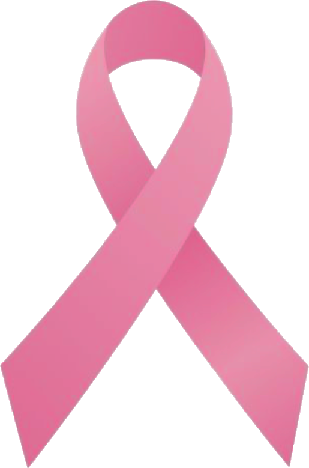

مبادرة من طالبات الصف 11آ · أكتوبر الوردي
في أكتوبر، نتكلّم عن الشيء الذي نؤجّله دائمًا.
نحن طالبات الصف 11آ في مدرسة الاستقلال الخاصة. قرأنا وسألنا وتعلّمنا عن سرطان الثدي، وجمعنا هنا ما نتمنّى أن تعرفه كل واحدة منّا: بلغة بسيطة، ومن دون تخويف.

أكتوبر الورديليش هذا مهم؟
لأن المعرفة البسيطة تصنع فرقًا
بعض الحقائق من مصادر موثوقة، بلا تهويل ولا أرقام مخترَعة. المصادر كلها في أسفل الصفحة.
- هو السرطان الأكثر شيوعًا بين النساء في ١٦٤ دولة من أصل ١٨٦ حول العالم، وفي الإمارات أيضًا. منظمة الصحة العالمية (بيانات ٢٠٢٤) · مركز أبوظبي للصحة العامة
- نحو ٨٠٪ من الحالات تحدث عند نساء ليس لديهن أي عامل خطورة محدّد غير كونهن نساء والتقدّم في العمر. يعني: الوعي يخصّنا كلنا. منظمة الصحة العالمية
- يمكن أن يظهر في أي عمر بعد البلوغ، لكنه يزيد مع التقدّم في العمر. وهو نادر عند الرجال، لكنه ممكن. منظمة الصحة العالمية
- الاكتشاف المبكر يصنع فرقًا. حين يُكتشف ويُعالج مبكرًا تقلّ الوفيات. في الدول ذات الدخل المرتفع انخفضت وفياته بنحو ٤٠٪ بين الثمانينيات و٢٠٢٠. منظمة الصحة العالمية
- في الإمارات: ماموغرام كل سنتين ابتداءً من عمر ٤٠ للنساء متوسطات الخطورة. ومن لديها تاريخ عائلي قوي قد تنصحها الطبيبة بالبدء أبكر. وزارة الصحة ووقاية المجتمع: الدليل الوطني (٢٠٢٣)
خرافة أم حقيقة؟
سمعتِ هذا من قبل؟ اقلبي البطاقة
جمعنا أكثر ما سمعناه من حولنا. اضغطي على أي بطاقة لتعرفي الجواب.
اعرفي جسمكِ
خمس دقائق في الشهر، بينكِ وبين نفسكِ
الفكرة ليست أن تبحثي عن مرض، بل أن تعرفي ما هو «طبيعي» بالنسبة لكِ، حتى تلاحظي أي تغيير بسرعة.
-
أمام المرآة
قفي أمام المرآة وذراعاكِ بجانبكِ. لاحظي الشكل والحجم ولون الجلد والحلمة. اختلاف بسيط بين الجانبين طبيعي جدًا.
-
ارفعي ذراعيكِ
ارفعي ذراعيكِ فوق رأسكِ، ثم ضعي يديكِ على خصركِ واضغطي قليلًا. ابحثي عن أي نقرة أو تجعّد أو تغيّر في الجلد أو في شكل الحلمة.
-
مستلقية، بأصابع مسطّحة
استلقي وضعي وسادة صغيرة تحت كتفكِ ويدكِ خلف رأسكِ. بأطراف الأصابع الثلاثة الوسطى المسطّحة، تحرّكي بدوائر صغيرة على الثدي كله: من الترقوة إلى أسفل الثدي، ومن الإبط إلى منتصف الصدر. نوّعي الضغط: خفيف، ثم متوسط، ثم أعمق. ثم بدّلي الجهة.
-
تحت الدش
كرّري الحركة نفسها وأنتِ واقفة تحت الدش؛ الجلد المبلّل بالصابون يجعل الأمر أسهل. ولا تنسي منطقة الإبط.
-
لاحظي، ولا تؤجّلي
إن لاحظتِ شيئًا جديدًا، لا تقلقي ولا تنتظري. معظم التغيّرات ليست سرطانًا، لكن الطبيبة وحدها تستطيع أن تطمئنكِ. ما الذي أنتبه له؟
متى؟
مرة كل شهر، بعد انتهاء الدورة بأيام قليلة، حين يكون الثدي أقل حساسية. وإن لم تكن عندكِ دورة، اختاري يومًا ثابتًا من كل شهر.
في سنوات المراهقة يتغيّر الجسم كثيرًا، ومن الطبيعي أن يختلف الجانبان قليلًا. المهم أن تتعرّفي على «طبيعتكِ»، وتسألي إن قلقتِ.
تذكير: الفحص الذاتي لا يغني عن الماموغرام أو فحص الطبيبة في العمر المناسب.
علامات تستحق الانتباه
لاحظتِ تغييرًا؟ اسألي، ولا تخمّني
هذه التغيّرات تستحق زيارة للطبيبة. ليست سببًا للذعر، لكنها سبب كافٍ للسؤال.
- كتلة أو سماكة جديدة في الثدي أو تحت الإبط، حتى لو لم تكن مؤلمة.
- تغيّر في حجم الثدي أو شكله أو مظهره.
- نقرات أو تجعّد أو احمرار أو أي تغيّر في جلد الثدي.
- تغيّر في شكل الحلمة أو الجلد المحيط بها.
- إفرازات غير معتادة أو دموية من الحلمة.
تذكّري: معظم هذه التغيّرات ليست سرطانًا. لكن كل تغيير جديد يستحق أن تراه طبيبة، فالاطمئنان المبكر أفضل من القلق الطويل.
عادات تحميكِ
عادات صغيرة، أثرها كبير
لا توجد طريقة مضمونة لمنع سرطان الثدي، لكن هذه العادات تقلّل بعض عوامل الخطر. وكل واحدة منها مرتبطة بسؤال في الاختبار.
-
تحرّكي
المشي السريع يُحسب! يُنصح البالغون بـ١٥٠ إلى ٣٠٠ دقيقة من النشاط المعتدل أسبوعيًا. ابدئي بعشر دقائق، والباقي يأتي.
السؤال ١ في الاختبار -
وزن صحي ومستقر
ليس رقمًا على الميزان ولا حمية قاسية. وجبات منتظمة، وحركة، ونوم كافٍ. ولأي سؤال عن وزنكِ، الطبيبة أو أخصائية التغذية هما العنوان.
السؤال ٢ -
طبق ملوّن
خضار وفواكه وحبوب وبقوليات، مع تقليل اللحوم المصنّعة. كلما تنوّعت الألوان في طبقكِ، كان أفضل.
السؤال ٥ -
هواء بلا دخان
التدخين، ومنه الشيشة، من عوامل الخطر المعروفة. وابتعدي عن أماكن الدخان قدر ما تستطيعين.
السؤال ٤ -
الهرمونات باستشارة
العلاج الهرموني بعد سنّ اليأس من عوامل الخطر المعروفة. لا تبدئي أي علاج هرموني من دون طبيبة، واسألي دائمًا عن فوائده ومخاطره.
السؤالان ٦ و٧ -
اعرفي قصة عائلتكِ
إن أُصيبت قريبة مقرّبة (أم، أخت، ابنة) بسرطان الثدي، قد تنصحكِ الطبيبة ببدء الفحص قبل الأربعين. اسألي بهدوء، فالمعلومة تحمي.
السؤال ٨ -
الفحص في وقته
من عمر ٤٠: ماموغرام كل سنتين للنساء متوسطات الخطورة. وقبل ذلك: اعرفي جسمكِ، واسألي الطبيبة عمّا يناسبكِ أنتِ.
السؤالان ٣ و٩ -
لا تؤجّلي
أي تغيير جديد؟ موعد مع الطبيبة، بلا قلق وبلا تأجيل. العلامات التي تستحق الانتباه
السؤال ١٠
عن الورشة
ساعة نتعلّم فيها معًا، بصوت عالٍ
تعهّد وردي
وعدٌ صغير، تكتبينه بنفسكِ
اختاري خطوة واحدة تقدرين عليها فعلًا، وخذي بطاقة تذكّركِ بها، أو شاركيها لتشجّعي غيركِ.
🌸
فريقنا
رسالة من القلب
من صنع طالبات الصف 11آ
أسئلة شائعة